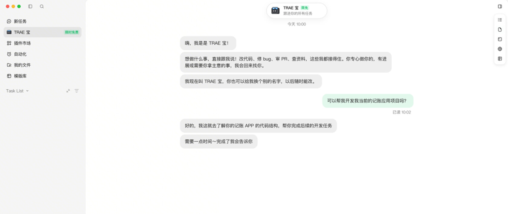

两种入口对应两种上下文
开发者切换项目时，经常要重新解释技术栈、过去否决的方案和哪些文件不能动。TRAE宝把跨项目历史与当前项目任务分成两个入口：全局助理梳理对话、任务和产物，项目助理处理当前目录中的需求。用户在最新版桌面端登录后，从左侧栏进入助理，或打开对应项目文件夹再布置工作。这样可以少复制背景材料，但仍要检查它提取了哪些旧约束。上一个客户的偏好未必适合下一个仓库，记住更多内容并不自动说明引用正确。
TRAE 宝 · 软件功能 · 官方文档与社区

开发者切换项目时，经常要重新解释技术栈、过去否决的方案和哪些文件不能动。TRAE宝把跨项目历史与当前项目任务分成两个入口：全局助理梳理对话、任务和产物，项目助理处理当前目录中的需求。用户在最新版桌面端登录后，从左侧栏进入助理，或打开对应项目文件夹再布置工作。这样可以少复制背景材料，但仍要检查它提取了哪些旧约束。上一个客户的偏好未必适合下一个仓库，记住更多内容并不自动说明引用正确。
项目助理的官方说明包括拆解需求、并行调度子任务，再按依赖安排联调与验证；运行期间还可继续追加任务。对一个同时涉及界面、接口和文档的改动，这可以减少手工分派与追问进度。实际验收仍要看三部分是否引用同一接口版本，以及失败的子任务有没有出现在汇总里。把问题和成果带回同一会话有利于集中复核，但不能据此推断每次写文件或外部操作都设有强制批准。本次没有运行真实仓库，也未核实取消、回滚或中断恢复的全部语义。
官方活动帖中，有用户希望自行选模型和关闭助理，也有人说提示词被重写、修改前没有充分询问；另有连接二维码和无响应的报告。这些具体反馈提示了值得检查的交互环节，却不能转成总体故障率。所读范围是公告与首批可见回帖，活动还奖励有效评论，因此赞扬和抱怨都不是随机样本。比较有用的试用问题是：用户写下的限制在传给子任务时是否仍然存在？如果助理建议改变范围，界面能否让人先看见，而不是直到代码差异里才发现。
上线报道日期为10月29日，本期按一周回看处理。11月2日官方活动另称截至11月8日23时59分问答和任务不消耗积分，页面没有注明时区，活动结束后的费用也未核实；视频生成不在范围内。试用时可挑一项已知修复，对照直接使用原有IDE代理的耗时，分别记录整理背景、等待、检查差异和返工。若只是更快启动多个任务，却需要更久寻找哪一项改坏了文件，节省就可能消失。仍应保留原来的测试和代码审查，不以任务数量或回复长度代替完成质量。